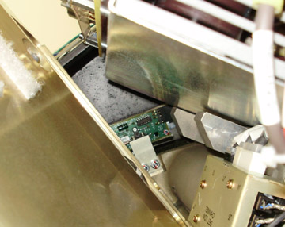
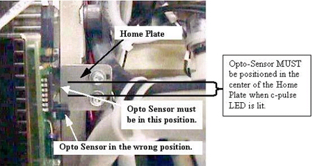

Operating Documentation
Direction 5193575-800, Rev# 5
LightSpeed 7.X Service Information - Adv
Operating Documentation |
| Required Persons | Preliminary Reqs | Procedure | Finalization |
|---|---|---|---|
| 1 | Timing Not Applicable | 15 mins | 5 mins |
This procedure defines the process to make sure the C-pulse is aligned with the gantry home flag.
| Last Revised: | June 12, 2008 |
| Item | Qty | Effectivity | Part# | Manufacturer | |
|---|---|---|---|---|---|
| Rear Cover Dollies | 2 | - | - | - | |
| SHOCK HAZARD | |
| FOR SCAN ROOMS WITH LIMITED SERVICE ACCESS ON THE LEFT SIDE OF THE GANTRY, SERVICE WITH POWER ON CAN NOT BE PERFORMED WHILE STANDING ON THE LEFT SIDE. | |
| Do not stand on the left side to make this adjustment. |
| Follow ALL required safety and PPE procedures when working on energized equipment. | |
| Turn OFF HVDC Gantry enable and axial drive. | |
| TGPU cover removal is not required for this procedure. | |
| Condition | Reference | Eff |
|---|---|---|
Only trained service personnel should service the GE CT Scanner. | - | - |
Remove the gantry right side cover.
Refer to Parts Replacement → Gantry → Enclosure → (Cover Removal Procedures).
Turn OFF the Axial Drive and HVDC, and 120 VAC switches on the gantry’s Service Switch Panel.
Remove the gantry left side cover, top covers and front cover.
| SHOCK HAZARD | |
| GANTRY AC POWER IS PRESENT DURING THIS PROCEDURE. | |
| Do not remove any covers unless stated in this procedure. |
Turn ON the 120 VAC switch on the gantry’s Service Switch Panel.
Rotate the gantry until the opto-sensor is in the center of the home plate. The flag and sensor board can be seen looking from the front along side the 48V power supply as shown in Illustration 1.See Illustration 2 for examples of correct and incorrect sensor locations on the Home Plate.
Illustration 1: Home Flag Side View

Illustration 2: Home Plate Passing Through Opto-Sensor Window

Verify that the Home Flag is centered in the Opto-Sensor Device and look at the C-pulse LED on the Encoder cable on the gantry frame lights up.
Illustration 3: C-Pulse LED on Cable

If the LED is not lit, shift the gantry slightly from side to side to see if the LED lights up while the home flag is still between the opto sensor. If the C-pulse LED does not light then perform the following steps. See Illustration 4.
Illustration 4: Encoder Gear Assembly

Only rotate the gear one tooth at a time, making sure you keep track of all changes so you can put the gear back to the starting position if you need to start over in the other direction.
Shift the gantry clockwise to the other side of the tank for easier access to the encoder
Lift and rotate the encoder one tooth then lower it onto the gear.
Shift the gantry back to put the home flag back into the sensor and see if the LED lights up.
Repeat the above steps until the C-pulse LED on the cable lights up.
| NOTE: | If the C-Pulse is not lined up with the center area of the home plate, images may appear slightly tilted or rotated. |
Turn OFF the 120 VAC switch on the gantry’s Service Switch Panel.
Install the gantry front, top and left side covers.
Refer to Parts Replacement → Gantry → Enclosure → (Cover Procedures).
Enable 120 VAC HVDC and Axial Drive service switches from the service switch panel. Press the table drives enable button on the lower right corner of the service switch panel.
Install the gantry right side cover.
Perform a [System Scanning Test] from the [Functional Checks] menu of the service manual to ensure system operation.